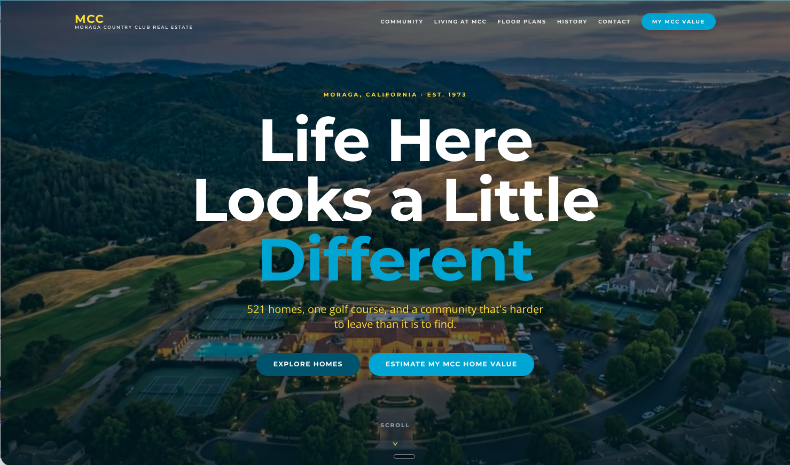
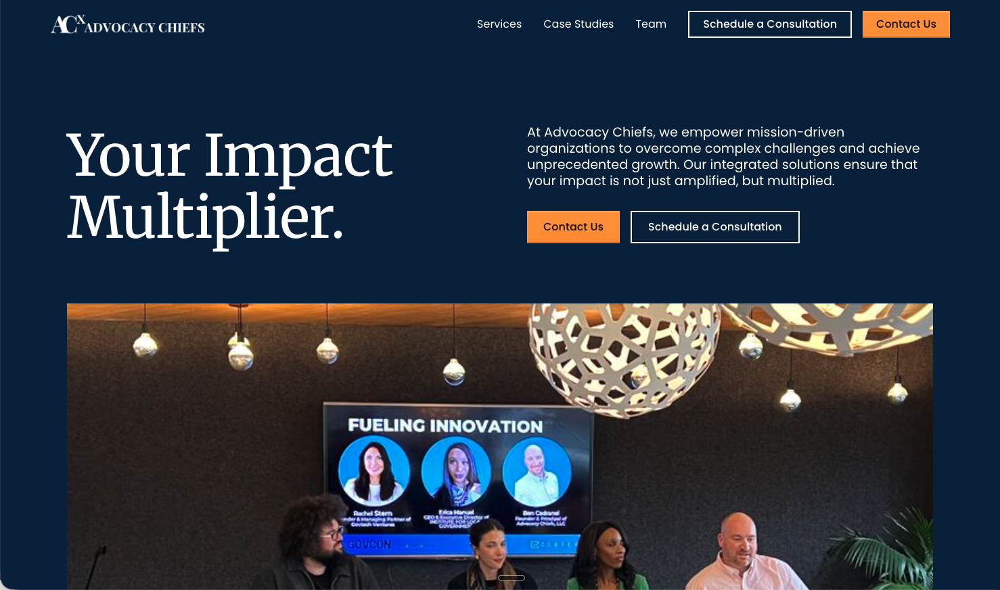
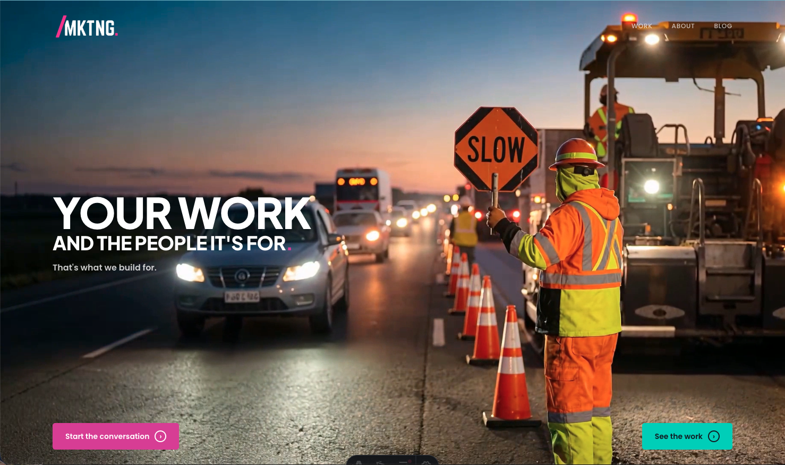
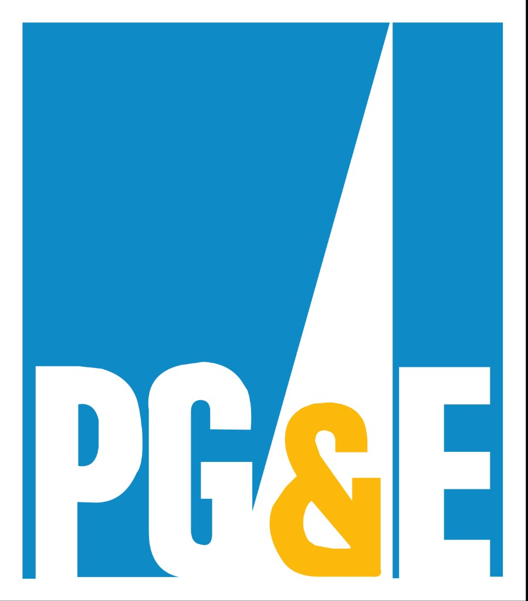
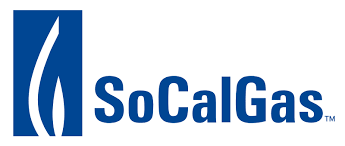

Section 11: Team and Relevant Experience
THE TEAM RUNNING THE ENGAGEMENT
The senior team on this engagement leads the strategy, the writing, and the build directly. We don't push work down a chain. The people on the call are the people doing the work.
SE
SCOTT EGGERT
President, Engagement Lead
Scott is the President of MKTNG and has spent more than two decades working across financial institutions, professional services firms, construction and infrastructure clients, nonprofit and arts organizations, and the public sector. He co-founded GoldenDoodle AI, a vertical AI product for high-stakes communications, and writes code, builds pipelines, and ships systems himself. Scott is a Partner with Sacramento Venture Philanthropy (SVP) and serves as Program Director for the SVP Think Tank. On the CTW engagement Scott serves as the strategic lead, runs the brand and messaging sprint, and remains the senior point of contact for CTW's leadership.
LB
LAURA BRADEN
Vice President of Public Relations, Messaging Lead
Laura brings twenty years of communications and public affairs experience across professional associations, Fortune 10 companies, political campaigns, and nonprofits. She served as Senior Director of Communications for the Sacramento Kings. Earlier in her career she was Deputy Communications Director for Governor Arnold Schwarzenegger, running state, national, and international earned media campaigns on economic, infrastructure, energy, and agricultural policy. On the CTW engagement Laura leads the messaging architecture and supports press release, podcast, and partner-bylined content development.
JM
JOSHUA MCCOWEN
Creative Director
Josh is Creative Director at MKTNG and Founder and Principal of Lofty Word. He brings more than twenty years leading creative teams across international markets, with expertise spanning brand strategy, visual identity, product user experience, and design systems for startups and established firms alike. On the CTW engagement Josh leads the visual identity work, presents three design directions for selection in week three of the engagement, and oversees design quality from concept through launch.
TC
THERESA CHRISTIAN
Project Manager, Client Services Lead
Theresa has more than a decade of digital marketing experience spanning content creation, digital advertising, branding, client services, and project management. She began her career writing blogs and has since managed the full lifecycle of complex multi-track engagements. On the CTW engagement Theresa serves as the day-to-day project manager, owns the production calendar, coordinates internal and client-side handoffs, and keeps the engagement on schedule.
WORK SAMPLES
Three live builds that demonstrate the capabilities being proposed for CTW.

MORAGACOUNTRYCLUBREALESTATE.COM
Screenshot pending
MORAGACOUNTRYCLUBREALESTATE.COM
Built on: Astro + Cloudflare (the same stack proposed for CTW)
Built in: Under two weeks
A neighborhood-specific real estate site for Ben Olsen at BrightWork Realty Advocates. Three integrated lead generation tools built directly into the site, including the personalized property assessment tool that produces custom-written recommendations rather than generic Zillow-style estimates. The site is closing visitors who would have otherwise bounced from a generic agent page. It has become the de facto community reference for the Moraga Country Club neighborhood, surpassing even the country club's own primary site in usability and engagement.
Why this is relevant to CTW: same technology stack we are proposing, the same personalized assessment architecture we are proposing for the Capital Event Readiness Assessment, and a build timeline that proves the four-week core delivery commitment is achievable.

ADVOCACYCHIEFS.COM
Screenshot pending
ADVOCACYCHIEFS.COM
Built on: Webflow
A consolidation rebuild for an integrated services firm. The previous site was eight to ten pages, disorganized, and gave visitors many places to click but few reasons to convert. We streamlined to a single focused page that closes visitors by leading with positioning, recent wins, case studies, testimonials, team credentials, and named differentiators. The before-and-after comparison demonstrates how strategic content consolidation outperforms exhaustive content sprawl, which is the exact thesis we are proposing for CTW's site.
Why this is relevant to CTW: this is the same content consolidation philosophy we are recommending for CTW's current sixty service pages and twenty-eight industry verticals. We have done this before. We know what gets cut and what stays.

MKTNG.CO
Screenshot pending
MKTNG.CO
Built on: Astro + Cloudflare + Keystatic (the exact stack proposed for CTW)
Our own firm's website rebuild. The previous site had eighty to one hundred pages of accumulated content, inconsistent voice, and an outdated design system. We streamlined to roughly five core pages plus a blog and case studies architecture. The new site is being built on the exact technology stack we are proposing for CTW, which means the build patterns, the CMS workflows, and the performance benchmarks transfer directly.
Why this is relevant to CTW: this is the closest possible analog to the engagement we are proposing. Same scope of consolidation, same technology stack, same goals around AEO foundation and content architecture. CTW will benefit from a build pattern we are simultaneously refining on our own site.
CASE STUDIES
ADVOCACY CHIEFS COALITION
Brand architecture for an integrated services firm.
A firm whose value is integrating services that buyers usually purchase separately has to look like one entity, not five. Advocacy Chiefs came to us as a coalition offering grants, government relations, legal compliance, and partnership development as separately contracted services. The market kept treating them as four firms.
We ran a positioning sprint that surfaced their core value (Impact Multiplier: integration as the product) and built a visual identity around it. The ACX brandmark uses an "x" that signals multiplication and cross-sector collaboration. The dual-tone palette communicates institutional credibility and innovative agility at the same time, which is what their dual audience requires.
The brand now lets the team show up as one firm to clients who need integration and as four practices to clients who need depth. The positioning travels across government proposals and startup pitch decks without modification.
The work this case study reflects is the same work we'd run for CTW in the brand sprint phase: surfacing the actual position, structuring the messaging, and building the architecture that lets a complex firm read as a coherent one.


PG&E AND CALIFORNIA ENERGY COMMISSION WORKSHOP PROGRAM
Communications for audiences that are skeptical before you speak.
Public utility workshops have a credibility problem before anyone speaks. Audiences arrive expecting to be managed, not heard. Pacific Gas and Electric needed a program that would deliver real information to community stakeholders, regulators, and rural construction partners across multiple California regions, in a context where most utility communication had been received cynically.
We built the program from the ground up: stakeholder research, content development, materials design, on-the-ground delivery, follow-through documentation. The work has now run for three years across PG&E, SoCalGas, and the California Energy Commission. The format has been adopted by adjacent agencies and replicated for separate audience segments.
This case matters for CTW because middle-market business owners are not naive audiences. They've been pitched by every accounting firm in the region. Trust gets earned by the firms that show up with actual depth in the room, not by the firms with the most polished decks. The communications discipline that produces a trusted utility workshop is the same discipline that produces a trusted advisory firm presence online.
BEN OLSEN AT BRIGHTWORK REALTY ADVOCATES
Two ways to write something for them, not for everyone.
Ben Olsen is a realtor working a specific neighborhood: Moraga Country Club in the East Bay. The challenge most realtors face in a defined market is staying visible to homeowners who aren't yet ready to sell. The standard plays, mass-market valuation tools and generic farming postcards, don't distinguish him from the dozens of other agents working the same addresses.
We built him two products that did.
The first is MoragaCountryClubRealEstate.com, a website that delivers a property value estimate tailored to a specific address. Unlike Zillow, the estimates are built on data the national platforms don't have access to: actual neighborhood comps, club-specific membership context, and the kind of hyperlocal market detail that only an agent embedded in the community collects. A homeowner submits their address. They get back something more accurate than Zillow can produce, packaged as a custom report with Ben's voice and his recommendations attached.
The second is a personal direct mail program that writes individual letters in Ben's voice, addressed to specific homeowners with situational relevance, at scale. Each letter reads like Ben sat down and wrote it. Because the system is doing the production work and Ben is the voice, the output is high-volume and high-personalization at the same time.
Both products invert the default of real estate marketing. Most agents send the same thing to everyone. Ben sends something written for the specific homeowner he's talking to. The Capital Event Readiness Assessment we're proposing for CTW is the same architecture, applied to a different audience: middle-market business owners thinking about a sale or recapitalization in the next two to five years. We've built this kind of system before. We know how it converts.
WEST BIOFUELS LLC
Communications under regulatory scrutiny.
West Biofuels was building a three-megawatt biomass facility in Northern California that crossed three constituencies that don't always agree. State energy regulators tracking compliance. Rural construction partners executing the work. Community stakeholders skeptical of any large new energy infrastructure. Every milestone required sustained communication with all three at once.
We built and ran the program through groundbreaking. Stakeholder coordination across regulators, elected officials, and trade press. Earned media at each significant milestone. Partnership development with industry associations. The campaign sustained coverage through the project's lifecycle and contributed to state and federal grant recognition.
CTW's clients live in the same kind of environment. Construction firms tracking FAR compliance. Government contractors managing audit relationships. Manufacturers operating across multiple state jurisdictions. The communications discipline that holds up under regulatory scrutiny is the same discipline that earns trust with audiences who have memory.
REFERENCES
Three references familiar with our work, available to speak to the depth, durability, and quality of the engagements they have known us through.
BENJAMIN M. CADRANEL, ESQ.
Chief Executive Officer, Advocacy Chiefs Coalition
916-878-9438
Engagement: Brand architecture, positioning, visual identity, and website rebuild for Advocacy Chiefs Coalition. See the live build at advocacychiefs.com.
PERRY THOMPSON
Chief Executive Officer, Hat Creek Construction
530-949-6145
Engagement: Three years of public relations, communications, and digital work for Hat Creek Construction, a Northern California construction firm operating in the same regulatory environment many of CTW's clients live in. Perry can speak to the durability of the partnership and the discipline of sustained communications work over multi-year engagements.
BEN OLSEN
Founder and Chief Executive Officer, BrightWork Realty Advocates
925-381-2151
Engagement: Two distinct builds for Ben Olsen, including MoragaCountryClubRealEstate.com and a personalized direct mail program. Ben can speak to the speed of build, the quality of the personalized AI assessment architecture, and the conversion performance of the lead generation tools.